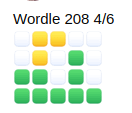

Wordle50
Para este problema, você irá implementar um programa que se comporta de forma similar ao popular jogo diário de palavras Wordle.
$ ./wordle 5
This is WORDLE50
You have 6 tries to guess the 5-letter word I'm thinking of
Input a 5-letter word: crash
Guess 1: crash
Input a 5-letter word: scone
Guess 2: scone
Input a 5-letter word: since
Guess 3: since
You won!Começando
Abra o VS Code.
Comece clicando dentro da janela do seu terminal e execute cd sozinho. Você deve encontrar que seu "prompt" se parece
com o abaixo.
$
Clique dentro da janela do terminal e execute
wget https://cdn.cs50.net/2022/fall/psets/2/wordle.zip
seguido de Enter para baixar um arquivo ZIP chamado wordle.zip em seu espaço de código. Tenha cuidado para
não ignorar o espaço entre o wget e a URL a seguir, ou
qualquer outro caractere!
Agora execute
unzip wordle.zip
para criar uma pasta chamada wordle. Você não
precisa mais do arquivo ZIP, então pode executar
rm wordle.zip
e responda com "y" seguido por Enter no prompt para remover o arquivo ZIP que você baixou.
Agora digite
cd wordle
seguido de Enter para mover-se para o diretório (ou seja, abrir) esse diretório. Seu prompt agora deve se parecer com o abaixo.
wordle/ $
Se tudo ocorreu bem, você deve executar
ls
e veja um arquivo chamado wordle.c, assim como 5.txt, 6.txt, 7.txt e 8.txt. Executar o comando code wordle.c deve abrir o arquivo onde você digitará seu código para este conjunto de problemas. Se isso não acontecer, volte seus passos e veja se consegue determinar onde errou! Se você tentar compilar o jogo agora, ele o fará sem erros, mas quando você tentar executá-lo, verá este erro:
Error opening file 0.txt. É normal, no entanto, já que você ainda não implementou parte do código que precisamos para fazer essa mensagem de erro desaparecer!
Contexto
Provavelmente, se você é usuário do Facebook, pelo menos um dos seus amigos postou algo parecido com isso, especialmente no início de 2022, quando estava na moda:

Se sim, seu amigo jogou Wordle e está compartilhando seus resultados para aquele dia! Todos os dias, uma nova "palavra secreta" é escolhida (a mesma para todos) e o objetivo é adivinhar qual é a palavra secreta em seis tentativas. Felizmente, dado que existem mais de seis palavras de cinco letras na língua inglesa, você pode obter algumas pistas ao longo do caminho, e a imagem acima na verdade mostra a progressão de seu amigo em suas tentativas, usando essas pistas para tentar se aproximar da palavra correta. Usando um esquema semelhante ao jogo Mastermind, se após você adivinhar a letra, ela se tornar verde, significa que não apenas essa letra está na palavra secreta daquele dia, mas ela também está na posição correta. Se ela ficar amarela, significa que a letra adivinhada aparece em algum lugar na palavra, mas não nessa posição. Letras que ficam cinzas não estão na palavra e podem ser omitidas em tentativas futuras.
Vamos terminar de escrever um programa chamado wordle que nos permita recriar esse jogo e jogá-lo no nosso terminal. Faremos algumas pequenas alterações no jogo (por exemplo, a maneira como ele lida com uma letra que aparece duas vezes em uma palavra não é a mesma que a do jogo real, mas, por simplicidade, erraremos do lado da facilidade de entendimento em vez de uma interpretação perfeitamente fiel), e usaremos texto vermelho em vez de cinza para indicar letras que não estão na palavra. No momento em que o usuário executa o programa, eles devem decidir, fornecendo um argumento de linha de comando, qual é o comprimento da palavra que eles desejam adivinhar, entre 5 e 8 letras.
Aqui estão alguns exemplos de como o programa deve funcionar. Por exemplo, se o usuário omitir um argumento de linha de comando completamente:
$ ./wordle
Usage: ./wordle wordsize Se o usuário fornecer um argumento de linha de comando, mas ele não estiver na faixa correta:
$ ./wordle 4
Error: wordsize must be either 5, 6, 7, or 8 Aqui está como o programa pode funcionar se o usuário fornecer uma chave de 5:
$ ./wordle 5
This is WORDLE50
You have 6 tries to guess the 5-letter word I'm thinking of
Input a 5-letter word: Em algum momento, o usuário deve digitar uma palavra de 5 letras. Claro, o usuário pode ser teimoso, e devemos garantir que ele esteja seguindo as regras:
$ ./wordle 5
This is WORDLE50
You have 6 tries to guess the 5-letter word I'm thinking of
Input a 5-letter word: wordle
Input a 5-letter word: computer
Input a 5-letter word: okay
Input a 5-letter word: games
Guess 1: games
Input a 5-letter word: Observe que nem contamos nenhuma das tentativas inválidas como palpites. Mas assim que o usuário fez uma tentativa legítima, contamos como um palpite e informamos sobre o estado da palavra. Parece que o usuário tem algumas pistas agora; eles sabem que a palavra contém um a e um e em algum lugar, mas não nos lugares exatos em que aparecem na palavra games. E eles sabem que g, m e s não aparecem na palavra, então os palpites futuros podem omiti-los. Talvez eles tentem, digamos, heart a seguir! ❤️
Especificação
Projete e implemente um programa, wordle, que complete a implementação do nosso clone do jogo Wordle50. Você perceberá que algumas partes grandes deste programa já foram escritas para você - você não tem permissão para modificar nenhuma dessas partes do programa. Em vez disso, seu trabalho deve ser limitado às sete TODOs que deixamos para você preencher. Cada uma dessas partes resolve um problema específico, e recomendamos que você as aborde na ordem de 1 a 7. Cada TODO numerado corresponde ao mesmo item na lista abaixo.
- No primeiro
TODO, você deve garantir que o programa aceite um único argumento de linha de comando. Vamos chamá-lo de k para fins de discussão. Se o programa não for executado com um único argumento de linha de comando, você deve imprimir a mensagem de erro como demonstramos acima e retornar1, encerrando o programa. - No segundo
TODO, você deve garantir que k seja um dos valores aceitáveis (5, 6, 7 ou 8), e armazenar esse valor emwordsize; precisaremos usar isso mais tarde. Se o valor de k não for exatamente um desses quatro valores, você deve imprimir a mensagem de erro como demonstramos acima e retornar1, encerrando o programa.
Depois disso, a equipe já escreveu algum código que irá percorrer e abrir a lista de palavras para o comprimento da palavra que o usuário quer adivinhar e seleciona aleatoriamente uma das 1000 opções disponíveis. Não se preocupe necessariamente em entender todo esse código, não é importante para fins deste trabalho. Veremos algo semelhante em uma tarefa posterior, e isso fará muito mais sentido naquele momento! Este é um bom lugar para parar e testar, antes de prosseguir para o próximo TODO, se o seu código se comporta como esperado. É sempre mais fácil depurar programas se você o fizer metodicamente!
- Para o terceiro
TODO, você deve ajudar a defender-se contra usuários teimosos garantindo que o palpite deles tenha o comprimento correto. Para isso, vamos prestar atenção na funçãoget_guess, que você precisará implementar completamente. O usuário deve ser solicitado (como viaget_string) a digitar uma palavra de \(k\) letras (lembre-se, esse valor é passado como um parâmetro paraget_guess) e, se fornecerem um palpite com o comprimento errado, eles devem ser solicitados novamente (como em Mario) até que forneçam exatamente o valor que você espera deles. Atualmente, o código distribuído não faz isso, então você precisará corrigir isso! Observe que, ao contrário do verdadeiro Wordle, na verdade não verificamos se o palpite do usuário é uma palavra real, então, nesse sentido, o jogo é talvez um pouco mais fácil. Todos os palpites neste jogo devem ser em caracteres minúsculos, e é aceitável assumir que o usuário não será tão teimoso a ponto de fornecer algo diferente de caracteres minúsculos ao fazer um palpite. Depois que um palpite legítimo for obtido, ele pode serretornado. - Em seguida, para o quarto
TODO, precisamos acompanhar a "pontuação" de um usuário no jogo. Fazemos isso tanto em uma base por letra - atribuindo uma pontuação de 2 (que definimos comoEXATO) para uma letra no lugar correto, 1 (que definimos comoPRÓXIMO) para uma letra que está na palavra, mas no lugar errado, ou 0 (que definimos comoERRADO) - e uma base por palavra, para nos ajudar a detectar quando potencialmente acionamos o final do jogo vencendo. Usaremos as pontuações de letras individuais quando colorimos a impressão. Para armazenar essas pontuações, precisamos de uma matriz, que chamamos destatus. No início do jogo, sem nenhum palpite ter sido dado, ela deve conter apenas 0s.
Este é outro bom momento para parar e testar seu código, especialmente no que diz respeito ao item 3 acima! Você notará que, neste ponto, quando finalmente digitar um palpite legítimo (ou seja, um que tenha o comprimento correto), seu programa provavelmente terá uma aparência semelhante à abaixo:
Input a 5-letter word: computer
Input a 5-letter word: games
Guess 1:
Input a 5-letter word: Isso é normal! Implementar a função print_word é o TODO número 6, então não devemos esperar que o programa faça qualquer processamento desse palpite neste momento. Claro, você sempre pode adicionar chamadas adicionais de printf (apenas certifique-se de removê-las antes de enviar) como parte da sua estratégia de depuração!
- O quinto
TODOé definitivamente o maior e provavelmente o mais desafiador. Dentro da funçãocheck_word, cabe a você comparar cada uma das letras do palpite (guess) com cada uma das letras da escolha (choice) (que, lembre-se, é a "palavra secreta" deste jogo) e atribuir pontuações. Se as letras corresponderem, concedaEXACT(2) pontos ebreakno loop - não há necessidade de continuar em loop se você já determinou que a letra está no lugar certo. Tecnicamente, se essa letra aparecer na palavra duas vezes, isso pode resultar em um pequeno bug, mas corrigir esse bug complicaria um pouco mais este problema do que queremos agora, então vamos aceitar isso como uma característica da nossa versão! Se você descobrir que a letra está na palavra, mas não no lugar certo, concedaCLOSE(1) pontos, mas nãobreak! Afinal, essa letra pode aparecer mais tarde no lugar certo na palavrachoicee sebreakmos muito cedo, o usuário nunca saberia disso! Você realmente não precisa definir explicitamente os pontosWRONG(0) aqui, já que você lidou com isso no Passo 4. Em última análise, você também deve estar somando a pontuação total da palavra quando a souber, porque é isso que esta função deve retornar. Novamente, não tenha medo de usardebug50e/ouprintfs, conforme necessário, para ajudá-lo a descobrir quais são os valores de diferentes variáveis neste ponto - até que você implemente a funçãoprint_word, abaixo, o programa não oferecerá muito em termos de um checkpoint visual! - Para o sexto
TODO, você concluirá a implementação deprint_word. Essa função deve procurar nos valores com que você populou o arraystatuse imprimir, caractere por caractere, cada letra doguesscom o código de cor correto. Você pode ter percebido algumas definições (assustadoras!)#defines no topo do arquivo, onde fornecemos uma maneira mais simples de representar o que é chamado de código de cor ANSI, que é basicamente um comando para mudar a cor da fonte no terminal. Você não precisa se preocupar em como implementar esses quatro valores (GREEN,YELLOW,REDeRESET, o último dos quais simplesmente retorna à fonte padrão do terminal) ou exatamente o que eles significam; em vez disso, você pode apenas usá-los (o poder da abstração!). Note também que fornecemos um exemplo no código de distribuição em que imprimimos um texto verde e depois redefinimos a cor, como parte da introdução do jogo. Portanto, sinta-se à vontade para usar a linha de código abaixo como inspiração sobre como você pode tentar alternar as cores:
printf(GREEN"This is WORDLE50"RESET"\n");Claro, ao contrário do nosso exemplo, você provavelmente não quer imprimir uma nova linha após cada caractere da palavra (em vez disso, você só quer uma nova linha no final, também redefinindo a cor da fonte!), para que não acabe parecendo como abaixo:
Input a 5-letter word: games
Guess 1: g
a
m
e
s
Input a 5-letter word: - Por fim, o sétimo
TODOé apenas uma pequena limpeza antes do programa encerrar. Independentemente do loop principalforter terminado normalmente, porque o usuário ficou sem palpites, ou porque saímos dele acertando a palavra exatamente, é hora de informar ao usuário sobre o resultado do jogo. Se o usuário ganhou o jogo, basta imprimir uma simples mensagemVocê ganhou!aqui. Caso contrário, você deve imprimir uma mensagem informando ao usuário qual era a palavra-alvo, para que saibam que o jogo estava sendo honesto com eles (e para que você tenha um meio de depurar se olhar para trás e perceber que seu código estava fornecendo pistas inadequadas ao longo do caminho!).
Como testar seu código
Execute o código abaixo para avaliar a correção do seu código usando o check50. Mas certifique-se de compilar e testar também por conta própria!
check50 cs50/problems/2023/x/wordle
Execute o seguinte para avaliar o estilo do seu código usando style50.
style50 wordle.c
Como Enviar
No seu terminal, execute abaixo para enviar seu trabalho.
submit50 cs50/problems/2023/x/wordle